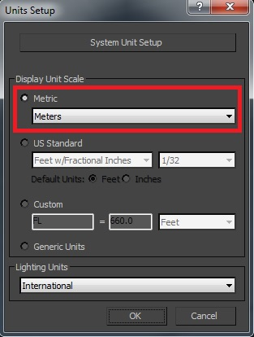
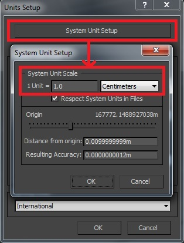
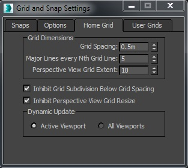
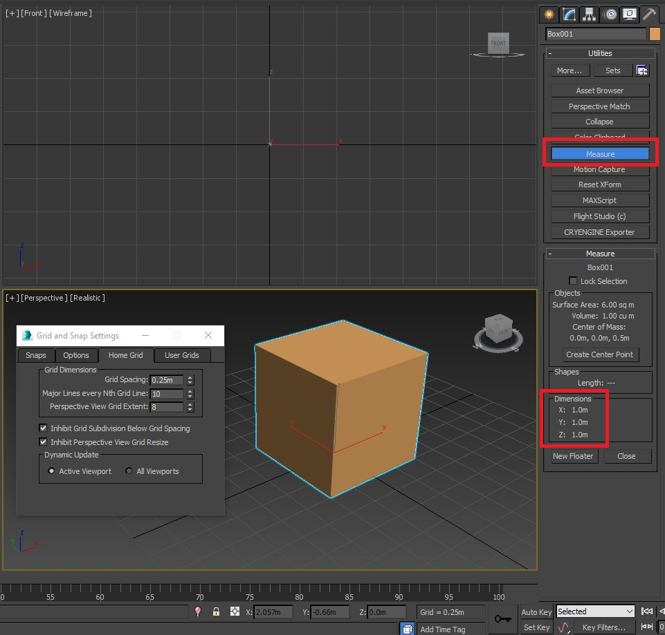
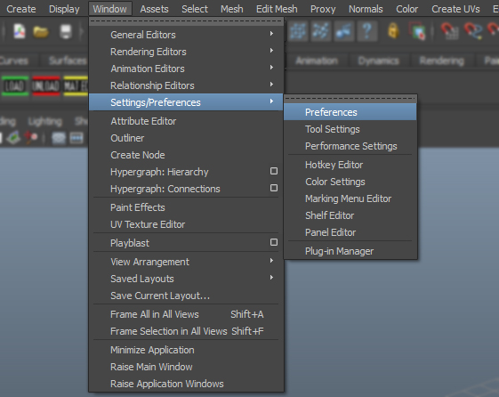
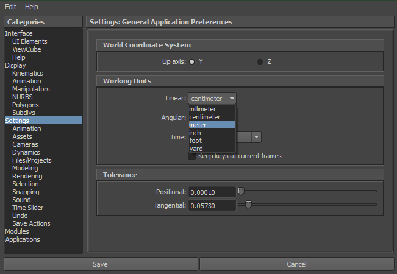

Обзор
Эталонные размеры, упомянутые в этой статье, изначально были созданы для игры Crysis, однако они по-прежнему актуальны при создании новых ресурсов.
3ds Max Настройка устройства
1 метр = 1 единица в CRYENGINE
Лучший способ работать в 3ds Max — установить единицу измерения в сантиметрах. Вы также можете настроить сетку и сделать ее более читабельной во время работы с активом.
Также есть очень полезный способ получить обратную связь непосредственно от движка.
Просто создайте объект Designer размером 1x1x1 м и перейдите в Уровень -> Экспортировать выбранные объекты. Затем в Сохранить как диалоговом окне обязательно установите тип файла *.obj/*.fbx.
Импортируйте этот *.obj/*.fbx в сцену 3ds Max и используйте его в качестве эталона размера для настройки сетки и масштаба единиц измерения. Отрегулируйте сетку соответствующим образом, чтобы она соответствовала вашему кубу 1x1x1 м. Повторно экспортируйте, чтобы проверить правильность настроек.
Настройка устройства
Внутри 3ds Max настройки устройства можно найти в меню. Настроить -> Настройка юнитов. Также не забудьте настроить шкалу системных единиц с помощью кнопки вверху в окне «Настройка единиц измерения»:
 
Настройки домашней сетки
Щелкните правой кнопкой мыши область переключения привязок под строкой меню и перейдите к третьему пункту. Домашняя сетка вкладка, чтобы настроить размер сетки. Размер и интервал настраиваемой сетки соответствуют только размеру создаваемого вами объекта. Отрегулируйте ее соответствующим образом, чтобы получить удобную сетку, соответствующую размеру создаваемой вами модели. Создание модели монеты и модели двухэтажного дома требует совершенно другой настройки сетки!

В этом примере интервал сетки составляет 0,5 м, основная линия проходит через каждые 5 единиц, а расширение сетки (расстояние просмотра) равно 10.
Проверьте настройки измерения
Чтобы подтвердить размер созданного вами объекта, в разделе утилит вы можете использовать инструмент измерения для проверки размеров созданного вами объекта.
Использование инструмента измерения в 3dsMax (шаг сетки 4 x 0,25 м = 1 м) 
Maya Настройка устройства
1 метр = 1 единица в CRYENGINE
Лучший способ работать в Maya — установить единицу измерения в сантиметрах. Вы также можете настроить сетку и сделать ее более читабельной во время работы над активом.
Существует также очень полезный способ получить измерение. обратная связь непосредственно из движка.
Просто создайте дизайнерский объект размером 1x1x1 м и перейдите в Меню уровня -> Экспортировать выбранные объекты и сохраните тип файла как *.obj или *.fbx файл.
Импортируйте созданное тело в свою 3D-сцену и используйте его в качестве ссылки.
Настройки устройства можно найти в разделе Окно -> Настройки/Настройки -> Настройки:

Затем нажмите Настройки в левом столбце. Здесь вам необходимо установить Рабочие единицы чтобы сантиметр или экспортер разместит предупреждение об экспорте.
Можно использовать приращения в метрах, но их необходимо сдвинуть назад, если вы хотите, чтобы процесс экспорта был без предупреждений и ошибок.

Сантиметры или метры
Когда вы настраиваете шкалу единиц измерения инструмента DCC в соответствии с CRYENGINE, установите шкалу значений единиц измерения на см или м связано с активом.
- Если вы работаете с меньшими объектами, такими как камни/галька/трава, это облегчит вашу жизнь на сантиметры.
- Если вы работаете с более крупными объектами, такими как дома/здания и т. д., установите масштаб единиц измерения в метрах.
Ссылки на размеры
- Высота стола (верх стола) = 75см.
- Высота сиденья (верх стула, сиденье) = 46см.
- Ступени лестницы = 18,75 см (сумма 4 ступенек составит 75 см).
- Коробки = 60см х 40см х 40 см.
- Скрыть объекты (за которыми AI склонен прятаться) = объект размером менее 120 см.
- Скрыть объекты (за которыми AI приседает) = объект размером более 120 см.
- Скрыть объекты (за которыми AI стоит прятаться и двигаться влево/вправо, чтобы покинуть укрытие) = объект размером более 180 см.
- Прыжок через предметы (стоя, без рук) = высота 30-50см.
- Прыжок через предметы (прыжки с разбега) = высота 50–100 см.
- Прыжок через предметы (вбок, рукой) = высота 120–150 см.